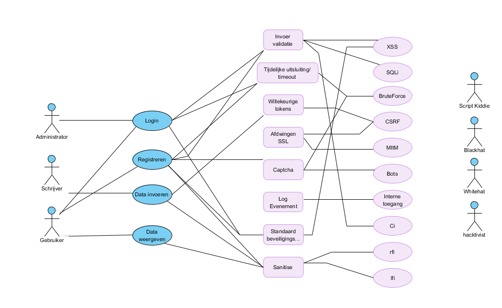

In dit document zal de algemene beschrijving staan rondom beveiliging.
Ik heb per role gekeken wat die rol wel en niet mag doen. Elke rol mag bepaalde dingen wel en niet doen. Hieronder gelden bepaalde funtionaliteiten
C = create, R = Read, U = update, D = delete, Y = yes, N = no
|
Data asset |
Visitor |
Writer |
Admin |
|
Account Information |
R |
CRU |
CRUD |
|
Story Information |
R |
CRUD |
RUD |
|
Comment Info |
R |
CRU |
CRUD |
|
Functionaliteiten |
|||
|
Gebruiker registreren |
Y |
N |
Y |
|
Gebruiker verwijderen |
N |
N |
Y |
|
Gebruiker bijwerken |
N |
Y |
Y |
|
Inloggen |
Y |
N |
N |
|
Verhaal lezen |
Y |
Y |
Y |
|
Verhaal aanmaken |
N |
Y |
N |
|
Verhaal bijwerken |
N |
Y |
Y |
|
Verhaal verwijderen |
N |
Y |
Y |
|
Administrator aanmaken |
N |
N |
Y |
Visitor
Account information
Een visitor heeft zelf geen account informatie. Het is wel mogelijk om andere profielen te bekijken. Dan krijgt hij informatie te zien zoals hoeveel verhalen het profiel heeft geschreven of hoeveel comments deze heeft.
Story information
Een visitor kan alleen verhalen bekijken. Verder kan hij niks anders doen.
Comment Info
Een visitor kan alleen comments van andere lezen. Hij kan verder er niks mee doen.
Functionaliteiten
Een visitor kan een normale gebruiker aanmaken. Hierdoor zal hij toegang krijgen tot meer functionaliteiten.
Een visitor kan niks van een gebruiker aanpassen. Dit komt omdat de visitor geen account heeft.
Een visitor kan geen account verwijderen aangezien hij daar niet de permissies voor heeft.
Een visitor kan inloggen op een account.
Een visitor kan een verhaal doorlezen om te kijken uit interesse.
Een visitor kan niks van een verhaal aanpassen aangezien een visitor geen account heeft met een Role.
Een visitor kan geen verhaal verwijderen.
Een visitor mag zelf geen verhalen schrijven omdat hij niet ingelogd is.
Writer
Account information
Een Writer heeft zelf account informatie. Het is wel zijn eigen profiel of dat vane profielen te bekijken.
Dan krijgt hij informatie te zien zoals hoeveel verhalen het profiel heeft geschreven of hoeveel comments deze heeft. Hij kan daarnaast zijn eigen account informatie aanpassen.
Story information
Een writer kan verhalen bekijken, zelf aanmaken en eigen verhaal zelf ook aanpassen.
Comment information
Een Writer kan kan comments neerzetten, zijn eigen comments updaten en verwijderen. Daarnaast is het ook mogelijk om comments van andere te lezen.
Functionaliteiten
Een writer kan geen gebruikers aanmaken. Das niet de bedoeling van de writer role.
Een writer kan zijn eigen account aanpassen waaronder gebruikersnaam en beschrijving.
Een writer kan geen account verwijderen aangezien hij daar niet de permissies voor heeft.
Een writer kan niet inloggen op een account. Hij is al ingelogd.
Een writer kan een verhaal doorlezen om te kijken uit interesse.
Een writer kan een verhaal aanpassen als hij het zelf heeft geschreven. Dit is om te voorkomen dat een writer andermans verhalen gaat aanpassen
Een writer kan zijn eigen verhalen verwijderen.Dit is om te voorkomen dat een writer andermans verhalen verwijderd.
Een writer mag zelf verhalen schrijven. Dit is de core functie van een writer
Admin
Account information
Een Admin kan een account aanmaken. Hij kan een role naar dit account toekennen: Gebruiker of Admin. Dit is om meerdere admins te kunnen maken. Ook is het mogelijk voor een admin om een account te verwijderen. Dit is om accounts te verwijderen die de regels hebben gebroken of omdat een ander Admin account niet meer wordt gebruikt.
Een account kan alle informatie van een account lezen. Dit is om te kijken of het account mogelijk regels overtreed. Mocht dit het geval zijn kan hij ook de account informatie aanpassen. Een admin kan echter nooit een wachtwoord of email veranderen.
Story information
Wanneer het aankomt op story informatie kan een admin een verhaal lezen om te kijken of het geen regels verbreekt, mogelijk het verhaal aanpassen en als het echt moet een verhaal verwijderen.
Comment Info
Een administrator kan een comment plaatsen op een verhaal. Dit is mogelijk om feedback te geven of om te zeggen dat hij het verhaal leuk vond. Dit is vooral voor interactie. Een admin kan ook comments lezen om te kijken of ze regels verbreken. Hij kan ook zijn eigen comments aanpassen maar NIET dat van anderen. Dit is om ervoor te zorgen dat een fraudulent administrator niet nep bewijs kan creeëren.
Het is echter wel mogelijk voor een administrator om een comment te verwijderen dat racistisch is.
Functionaliteiten
Een administrator kan geen normale gebruikers aanmaken. Dit zou niet nodig moeten zijn aangezien iedereen een account zou moeten kunnen aanmaken.
Een administrator kan de descriptie en naam van een andere gebruiker aanpassen mochten deze de regels verbreken.
Een administrator kan een gebruiker verwijderen als deze meerdere keren de regels heeft verbroken of als een administrator account niet meer wordt gebruikt.
Een administrator kan niet twee keer inloggen
Een administrator kan een verhaal doorlezen om te kijken of er mogelijk problemen zijn.
Een administrator kan een verhaal aanpassen mocht deze de regels verbreken.
Een administrator kan een verhaal verwijderen als deze de regels verbreekt.
Een administrator mag zelf geen verhalen schrijven. Het doel van een administrator is om verhalen te checken, niet om deze zelf op te schrijven.
Van elke functionaliteit heb ik bescjreven wat iemand kan doen om om mijn applicatie te misbruiken. Ik heb hiervoor oplossingen beschreven in de rechthoeken. De kraaien poten wil zeggen dat alles wat hiermee te maken heeft wordt meegenomen in het ontwerp
Het doel is om een veilige applicatie te maken die aan de beveiliging voldoet en daarnaast een openbare omgeving geeft om je mening etc te geven. Ook zal deze applicatie worden gebruikt voor red en blue teamers om hun vaardigheden te testen.
Hieronder zullen alle user groups staan. Het is mogelijk dat deze over tijd veranderen.
| Usergroups | Red Teamers | Blue Teamers | Visitor | Writer | Admin |
|---|---|---|---|---|---|
| beschrijving | Hackers die de applicatie zullen testen. | Beveiligers die de applicatie zullen beschermen tijdens een hacking aanval | Gebruikers die de site gebruiken om verhalen te lezen en om berichten te plaatsen. | Gebruikers die de site gebruiken om hun verhalen te plaatsen. | Administratie zorgt ervoor dat onder andere racistische of seksuele verhalen van de site worden gehaald. |
In dit hoofdstuk zal worden de risico's beschreven en uitgelegd. Eerst zullen de waardes worden uitgelegd die worden gebruikt.
|
Impact level |
Description |
|
5. Very High |
an event that has serious impact on the business and business results. |
|
4. High |
an event that has significant impact on the business results dropping below any minimally acceptable level. |
|
3. Medium |
an event that has significant impact on the business results dropping below desired level but staying above minimally acceptable level. |
|
2. Low |
an event that has little impact on the business and business results. |
|
1. Neglictible |
an event that has little impact on the business and business results.. |
|
Probability |
Description |
|
3. High |
It is likely that the event occurs the coming year. |
|
2. Medium |
Chances are not high but possible that the event occurs the coming year. |
|
1. Low |
It is unlikely that the event occurs the coming year. |
In het table hieronder staan de bedreigingen met de classificaties. De beredenering hiervoor zal eronder staan. De security control level wordt berekent door Impact level * Probability. Een voorbeeld zou zijn een High Impact en een Low Probability: 4 * 1 = 4.
| 1. Threat | 2. impact description | 3. impact level | 4. probability | 5. level security controls |
| DDoS | Downtime of the application | Low | High | 6 |
| Scriptkiddies, Opportunists | Small security issues can be found | Medium | Medium | 6 |
| Malware infection | Incident handling costs | High | Medium | 8 |
| Phishing | Incident handling costs | Medium | Medium | 6 |
| Data breach personal data | Customer, reputation damage | High | Medium | 8 |
| Stealing confidential business data | Incident handling costs, Financial damage | Low | Low | 2 |
| Hacktivists | Customer damage, company image | Medium | Low | 3 |
| State actors | Reputation damage, Fines, Downtime | Medium | Low | 3 |
| Fraudulent employee | Company image, Customer damage | Medium | Low | 3 |
DDoS
Het DDos van mijn applicatie zal naar alle waarschijnlijkheid vaak kunnen gebeuren. Dit heeft echter een niet te grootte impact aangezien het alleen inhoudt dat mijn applicatie tijdelijk niet bereikbaar zou zijn. Mogelijke oplossingen om tegen DDoS te gaan is Captcha, het buitensluiten van ip-adressen dat tevaak voorkomt en een IPS.
| Preventive | Detective | Repressive | Corrective | ||
| Human level | Herstarten, legale actie ondernemen | ||||
| Organisation Level | |||||
| Application Level | Teveel requests blokkeren | CAPTCHA | Bron zoeken, Bron buitensluiten | ||
| System Level | Logging | ||||
| Network Level | Teveel requests blokkeren | Detection with IPS | Blocking when having to many requests | Buitensluiten ip adres | |
| Buildings and grounds | |||||
Script Kiddies
Het is mogelijk dat Script Kiddies fouten vinden in de applicatie en de impact hiervoor zal dus best groot zijn. De reden hiervoor is omdat de code dan moet worden verbeterd en dit kan tijd kosten. Mogelijke oplossingen tegen script kiddies zijn: Logging en het toepassen van alle OWASP preventie maatregelen.
| Preventive | Detective | Repressive | Corrective | ||
| Human level | Blue-team | bron vinden en mogelijk legale actie ondernemen | |||
| Organisation Level | Responsible disclosure | ||||
| Application Level | Owasp top 10 preventie maatregelen | Logging | Account/bron buitensluiten | ||
| System Level | Logging | ||||
| Network Level | IPS | IDS | Buitensluiten ip adres | ||
| Buildings and grounds | |||||
Malware Infection
Malware infection zou een hoge impact hebben op de applicatie. Naar alle waarschijnlijkheid zou er een back-up moeten worden gebruikt waardoor we veel informatie zouden verliezen. De kans dat dit echter zou gebeuren zou vrij klein zijn aangezien we alleen sources gebruiken en installeren die gechecked zijn. Mogelijke oplossingen voor malware is Security awareness, Isolerende shells, Firewall, Virus Scanners gebruiken en systemen scannen om de zoveel tijd.
| Preventive | Detective | Repressive | Corrective | ||
| Human level | Security Awareness | Blue-team | Geïnfecteerde systemen isoleren | Fixen van systeem of vervangen | |
| Organisation Level | Onderzoeken hoe het is gebeurd | ||||
| Application Level | Isolerende shells | ||||
| System Level | Virus scanner | Virus scanner | Bestand in Quarantaine plaatsen | Systeemscan | |
| Network Level | Firewall | IDS | Alle systemen scannen | ||
| Buildings and grounds | Computers locken, Systemen achter gesloten deur | Camera's en alarmen | Politie bellen | Beveiliging verbeteren | |
Phishing
Phishing heeft een grote kans om te worden gebruikt maar de impact level zou vrij laag zijn. Oplossingen hiervoor zijn spamfilters en security awareness.
| Preventive | Detective | Repressive | Corrective | ||
| Human level | Security Awareness | Blue-team | Security waarschuwing | ||
| Organisation Level | Dubbel checken | Dubbel checken | |||
| Application Level | |||||
| System Level | spamfilters | spamfilters | |||
| Network Level | Gelekte accounts verwijderen | ||||
| Buildings and grounds | |||||
Data breach personal data
De impact hiervan zou erg groot zijn. De site zou worden gezien als onveilig en veel klanten zullen dan naar alle waarschijnlijkheid vertrekken. Om dit te voorkomen is het belangrijk dat authorisatie goed wordt toegepast, dat alle data dat moet worden geencrypt goed geencrypt is en dat de database op een goede manier is beveiligd met de daarbij horende permissies.
| Preventive | Detective | Repressive | Corrective | ||
| Human level | Blue-team | Email sturen naar alle klanten dat er een databreach is geweest | |||
| Organisation Level | Niemand toegang geven tot de productie database, Responsible Disclosure/bug bounty | Informeren bij Data Protection Office | |||
| Application Level | Goed security implementeren, OWASP top10 | Elk request richting DB loggen | Applicatie (tijdelijk) zo snel mogelijk offline halen | Applicatieproblemen fixen | |
| System Level | Data encrypted opslaan via een up-to-date encryptie | ||||
| Network Level | CORS policy | IDS | |||
| Buildings and grounds | Server rooms opslot | ||||
Stealing confidential business data
De impact hiervan zou erg laag zijn. De confidential business data zou niet al te belangrijk zijn en zal er hooguit voor zorgen dat nieuwe features worden geleaked. Om hier echter tegen te gaan is het belangrijk om alleen mensen met de clearance level toegang kunnen krijgen tot de business data en dat dit alleen gebeurd als het echt nodig is .
| Preventive | Detective | Repressive | Corrective | ||
| Human level | Security Awareness | Aangifte doen | |||
| Organisation Level | Geen toegang geven tot de business data tenzij het echt nodig is | Informeren bij Data Protection Office | |||
| Application Level | Alle data encrypten wat verstuurd word over netwerken | ||||
| System Level | User privileges | Loggen wie welke files opvraagt | |||
| Network Level | Computers locken, Systemen achter gesloten deur. Documenten in een kluis stoppen. | Camera's en alarmen | Politie bellen | Beveiliging verbeteren | |
| Buildings and grounds | Server rooms opslot | ||||
Hacktivists
De impact hiervan zou medium zijn. Tenzij ze toegang zouden kunnen krijgen tot de database zouden ze niet veel schade kunnen toepassen. De kans dat dit echter zou gebeuren zal erg laag zijn aangezien de site geen politieke standpunten zou moeten nemen.
| Preventive | Detective | Repressive | Corrective | ||
| Human level | Blue team | ||||
| Organisation Level | Sancties of aangifte tegen aanvallende land, Informeren bij Data Protection Office | ||||
| Application Level | Security implementeren, Vulnerability scans met tools, Authenticatie nodig voor DB interactie | Bug fixes toevoegen in het ontwikkelproces met hoge prioriteit | |||
| System Level | standaard security maatregelen nemen | API request monitoring (als van toepassing) | |||
| Network Level | standaard security maatregelen nemen | IDS | IPS | ||
| Buildings and grounds | Computers locken, Systemen achter gesloten deur | Camera's en alarmen | Politie bellen | ||
State Actors
De impact hiervan zou medium zijn. Tenzij ze toegang zouden kunnen krijgen tot de database zouden ze niet veel schade kunnen toepassen. De kans dat dit echter zou gebeuren zal erg laag zijn aangezien de site niks met de regering te maken zou moeten hebben.
| Preventive | Detective | Repressive | Corrective | ||
| Human level | Awareness | Blue team | |||
| Organisation Level | Voldoen aan wetgeving | Sancties of aangifte tegen aanvallende land, Informeren bij Data Protection Office | |||
| Application Level | Security implementeren, Vulnerability scans met tools, Authenticatie nodig voor DB interactie | ||||
| System Level | standaard security maatregelen nemen | ||||
| Network Level | Beveiliging (draadloos) intern netwerk | IPS | |||
| Buildings and grounds | Access control | Politie bellen | |||
Fraudulent employee
De impact hiervan zou medium zijn. Als een administrator plotseling dingen zou verwijderen zou dat voor problemen kunnen zorgen. Om deze reden zou er altijd een tweede admin zijn toestemming moeten geven voor het verwijderen of aanpassen van content. Daarnaast zouden ook alle acties moeten worden gelogd.
| Preventive | Detective | Repressive | Corrective | ||
| Human level | Vreemd gedrag notificeren | ||||
| Organisation Level | Achtergrond van werknemer checken, VOG | Werknemer isoleren | Werknemer ontslaan | ||
| Application Level | Logging | ||||
| System Level | Restrictie accounts/privilege's | Monitoren van accounts | Account blokkeren | Account verwijderen en organisatie inlichten | |
| Network Level | Monitoren van accounts | Source blokkeren | Source verwijderen en schade documenteren | ||
| Buildings and grounds | Na sluitingsuren alles dicht zetten, beveiliging met persoonlijke codes | Camera's en alarmen | Politie inlichten | ||
|
CIAP |
C |
I |
A |
P |
|
Account info |
Condifdential |
High |
Important |
Personal |
|
Story information |
Public |
Medium |
Required |
Public |
|
Comment info |
Public |
Medium |
Not necessary |
Public |
|
Authentication |
Public |
Guaranteed |
Essential |
Personal |
|
Story creation |
Confidential |
High |
Important |
Personal |
|
Story deletion |
Confidential |
Guaranteed |
Important |
Personal |
Confidentiality
Niet alle data is confidential. Het is mogelijk om verhalen van andere mensen te kunnen bekijken. Account informatie (in dit geval email en status of het een administrator is) is wel confidential en zal je alleen kunnen zien als je daartoe authorizatie hebt. Dit is om ervoor te zorgen dat aanvallers meer moeite moeten doen.
Integrity
Gebruiker informatie is belangrijk maar het aanpassen van van verhalen mag nooit worden gedaan door iemand anders behalve een administrator of de schrijver zelfs. Als dit geen garantie is zullen gebruikers nooit hun verhalen op deze website willen zetten. Dit kan daarnaast dan ook nog leiden tot slander of het toevoegen van informatie wat volgens de regels van de website niet mag.
Availability
In geval van nood moeten gebruikers/schrijvers altijd hun verhaal of profiel moeten kunnen aanpassen of verwijderen. Als dit niet garant staat kan het zijn dat schrijvers de site niet meer zullen vertrouwen. Het bekijken van verhalen alhoewel wel belangrijks is minder belangrijk dan het aanpassen van het account of verhaal.
Privacy
Niet alle data is persoonlijke data maar een gedeelte ervan wel. Dit houdt in dat alle persoonlijke data alleen maag worden opgeslagen als dat het absoluut nodig is en dat het daarnaast volgend de GDPR wet moet worden voldaan